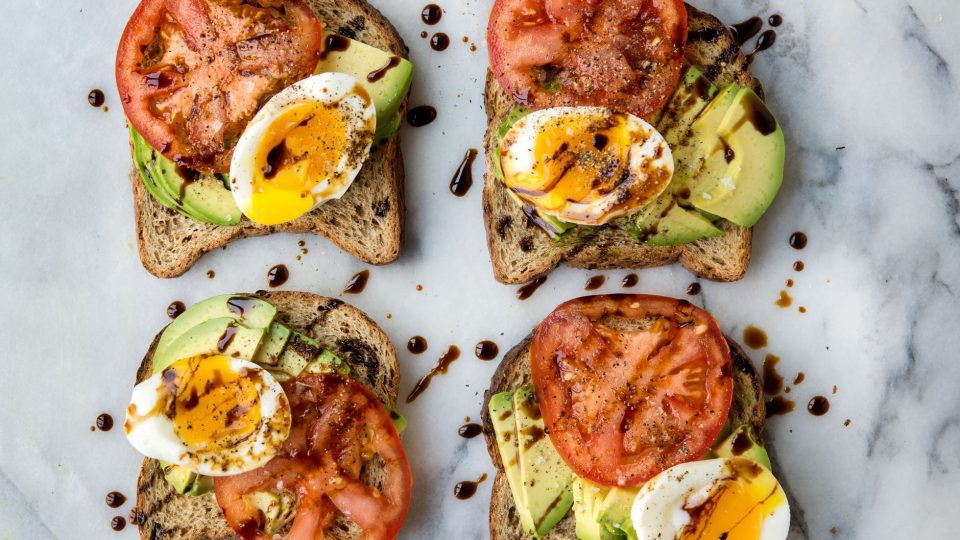

avocado toast

Description
Quick preparation
simply in the morning
- 4 large eggs
- 4 avocados, thinly sliced
- flaky sea salt and black pepper to taste
- 8 slices angelic grain bread
- 2 large tomatoes, thinly sliced
- Drizzle of balsamic vinegar
- Bring pot of water to boil. Carefully drop in eggs. Cook 6 1/2 to 7 minutes for soft-boiled eggs. Transfer to ice water bath to cool. Peel.
- Toast bread in toaster.
- Arrange avocado slices on bread.
- Arrange tomato slices on top.
- Slice egg in half. Arrange egg on top.
- Season with salt and pepper. Drizzle with balsamic. Serve.